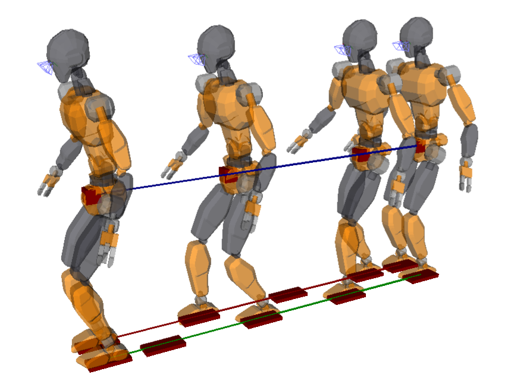
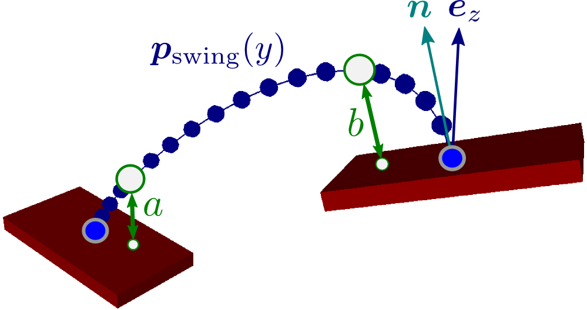
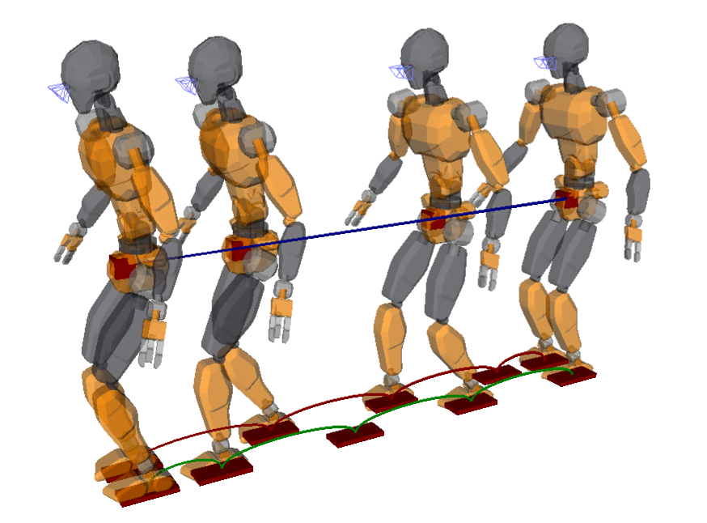
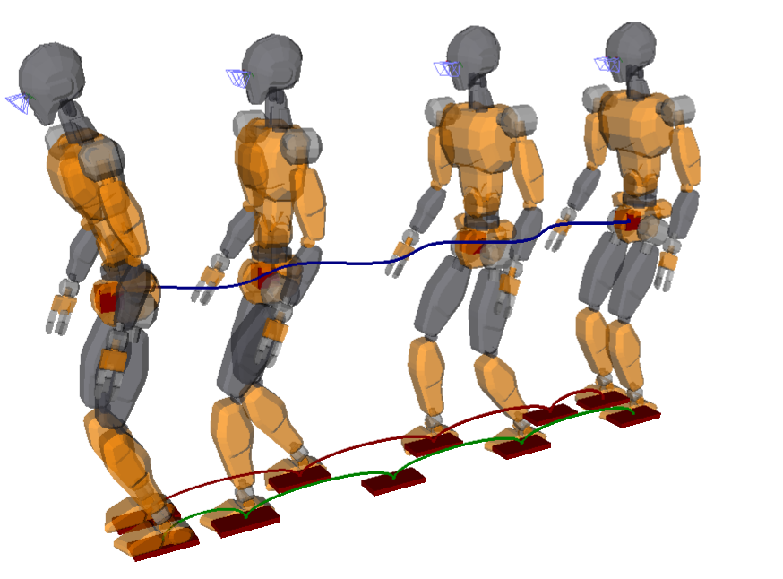

Walking trajectory generation is the problem of computing an ideal locomotion
trajectory, sometimes called a walking pattern. It is the first sub-problem
in the traditional walking control scheme for legged robots. A walking
trajectory is dynamically consistent (it respects the laws of physics) and
unperturbed (it assumes all controls are perfectly executed by the robot). In
this post, we will see how to design a complete walking trajectory generator in
pymanoid using polynomial
interpolation for the swing leg and model predictive control for the center of
mass.
The goal of our walking trajectory generator will be to make the robot walk
through a given sequence of contacts (in Python, a list of pymanoid.Contact
objects). For walking forward, we can generate this sequence simply by placing
footsteps to the left and right of a line segment:
importpymanoiddefgenerate_footsteps(distance,step_length,foot_spread):contacts=[]defappend_contact(x,y):contacts.append(pymanoid.Contact(shape=(0.11,0.05),pos=[x,y,0.],friction=0.7))append_contact(0.,+foot_spread)append_contact(0.,-foot_spread)x=0.y=foot_spreadwhilex<distance:ifdistance-x<=step_length:x+=min(distance-x,0.5*step_length)else:# still some way to gox+=step_lengthy=-yappend_contact(x,y)append_contact(x,-y)# now x == distancereturncontacts
The function depends on three parameters: distance, the total distance in
meters to walk, step_length, which is by definition the distance between
right and left heel in double support, and the lateral distance foot_spread
between left and right foot centers. The first and last steps have half step
length so as to accelerate and decelerate more progressively. In what follows,
the robot will walk seven steps forward with a step length of 30 cm:
The robot starts from a standing posture with its center of mass (COM) 85 cm
above ground, which is a comfortable height for the default JVRC-1 model. We
put the robot in this initial posture by solving the inverse kinematics (IK) of
our desired stance (a pymanoid.Stance):
if__name__=="__main__":dt=0.03# simulation time step, in [s]sim=pymanoid.Simulation(dt=dt)robot=pymanoid.robots.JVRC1(download_if_needed=True)sim.set_viewer()stance=pymanoid.Stance(com=pymanoid.PointMass([0,0,0.85],robot.mass),left_foot=footsteps[0],right_foot=footsteps[1])stance.bind(robot)robot.ik.solve(max_it=42)
Walking alternates double support phases (DSP), where both feet are in
contact with the ground, and single support phases (SSP), where one foot (the
swing foot) is in the air while the robot supports its weight on the other
one:
classWalkingFSM(pymanoid.Process):def__init__(self,ssp_duration,dsp_duration):super(WalkingFSM,self).__init__()self.dsp_duration=dsp_durationself.mpc_timestep=3*dt# update MPC every 90 [ms] (see below)self.next_footstep=2self.ssp_duration=ssp_durationself.state=None#self.start_standing()defon_tick(self,sim):ifself.state=="Standing":returnself.run_standing()elifself.state=="DoubleSupport":returnself.run_double_support()elifself.state=="SingleSupport":returnself.run_single_support()raiseException("Unknown state: "+self.state)
The state machine will switch between single and double support phases based on
the pre-defined phase timings ssp_duration and dsp_duration.
For each state, we define a "start" and "run" function. The standing state
simply waits for the user to set the start_walking boolean attribute to
True:
# class WalkingFSM(pymanoid.Process):defstart_standing(self):self.start_walking=Falseself.state="Standing"returnself.run_standing()defrun_standing(self):ifself.start_walking:self.start_walking=Falseifself.next_footstep<len(footsteps):returnself.start_double_support()
For starters, the double support state simply waits for its phase duration, then
switches to single support:
# class WalkingFSM(pymanoid.Process):defstart_double_support(self):ifself.next_footstep%2==1:# left foot swingsself.stance_foot=stance.right_footelse:# right foot swingsself.stance_foot=stance.left_footdsp_duration=self.dsp_durationifself.next_footstep==2orself.next_footstep==len(footsteps)-1:# double support is a bit longer for the first and last stepsdsp_duration=4*self.dsp_durationself.swing_target=footsteps[self.next_footstep]self.rem_time=dsp_durationself.state="DoubleSupport"self.start_com_mpc_dsp()returnself.run_double_support()defrun_double_support(self):ifself.rem_time<=0.:returnself.start_single_support()self.run_com_mpc()self.rem_time-=dt
We use the start function of the state to save two important contact locations,
namely the stance foot and swing target of the next SSP. The reason for saving
them here rather than in the start function of the SSP itself will become clear
later on, when we implement the start_com_mpc_dsp() and run_com_mpc()
functions. For now, let us complete them with a dummy linear interpolation to
debug the development of our ongoing FSM:
# class WalkingFSM(pymanoid.Process):defstart_com_mpc_dsp(self):pass# to be implemented laterdefrun_com_mpc(self):stance.com.set_x(0.5*(self.swing_foot.x+self.stance_foot.x))
The single support phase interpolates both COM and swing foot trajectories, and
updates stance targets accordingly:
# class WalkingFSM(pymanoid.Process):defstart_single_support(self):ifself.next_footstep%2==1:# left foot swingsself.swing_foot=stance.free_contact('left_foot')else:# right foot swingsself.swing_foot=stance.free_contact('right_foot')self.next_footstep+=1self.rem_time=self.ssp_durationself.state="SingleSupport"self.start_swing_foot()self.start_com_mpc_ssp()self.run_single_support()defrun_single_support(self):ifself.rem_time<=0.:stance.set_contact(self.swing_foot)ifself.next_footstep<len(footsteps):returnself.start_double_support()else:# footstep sequence is overreturnself.start_standing()self.run_swing_foot()self.run_com_mpc()self.rem_time-=dt
For now, we apply dummy linear interpolations for both the COM and swing foot
trajectories:
# class WalkingFSM(pymanoid.Process):defstart_swing_foot(self):self.swing_start=self.swing_foot.posedefstart_com_mpc_ssp(self):pass# to be implemented laterdefrun_swing_foot(self):progress=min(1.,max(0.,1.-self.rem_time/self.ssp_duration))new_pose=pymanoid.interp.interpolate_pose_linear(self.swing_start,self.swing_target.pose,progress,)self.swing_foot.set_pose(new_pose)
When the phase time reaches the desired SSP duration, the state machine
switches back to double support and the process repeats until the robot has
traversed all footsteps in the sequence, finally switching back to the standing
state.
Although we haven't implemented neither swing foot nor COM trajectories yet, we
can already validate this code in simulation. Let us create an FSM process with
phase durations roughly 0.7/0.1 seconds for single and double support
respectively:
Now, the only thing left to do to start walking is:
In[1]:fsm.start_walking=True

The robot shuffles its feet in a motion that is kinematically but not
dynamically consistent. We can see that by scheduling an extra wrench drawer to
check the dynamics of the simulation:
This process draws feasible contact forces when it finds some, otherwise it
colors the background in red to show that the motion is not dynamically
feasible. This is what happens most of the time with our controller at this
point.
Our fixed footstep sequence provides initial and target configurations of the
swing foot for each SSP. For this first prototype, let us implement a "flat
foot" walk where the swing foot stays parallel to the ground. This strategy is
easier to implement, but on real robots it has a tendency to yield early
contacts and larger impacts than the heel-strike toe-off walk commonly applied
by humans.
The orientation of the swing foot being given, the main parameter to tune is
the vertical clearance of the trajectory. The default pymanoid.SwingFoot
interpolates a cubic Hermite spline parameterized by a
takeoff clearance height a and a landing clearance height b:

For us the ground contact normal n coincides with the world vertical
ez in the figure above. The swing foot interpolator computes a
polynomial P(t) such that:
P(0) is the initial foot position,
P(TSSP) is the target foot position, with TSSP the duration of the single support phase,
P(41TSSP) is at height greater than a from the initial contact, and
P(43TSSP) is at height greater than b from the target contact.
We can choose a=b=5cm so that the foot detaches neatly from
the ground without causing too much vertical height variations of the COM.
First, let us instantiate the interpolator by:
# class WalkingFSM(pymanoid.Process):defstart_swing_foot(self):self.swing_start=self.swing_foot.poseself.swing_interp=SwingFoot(self.swing_foot,self.swing_target,ssp_duration,takeoff_clearance=0.05,landing_clearance=0.05)
Second, we replace the dummy linear interpolation by the output from the swing
foot interpolator:
# class WalkingFSM(pymanoid.Process):defrun_swing_foot(self):new_pose=self.swing_interp.integrate(dt)self.swing_foot.set_pose(new_pose)

Now the robot properly lifts its feet in a motion that is kinematically but
still not dynamically consistent.
Assuming that the robot is powerful enough to execute the walking motion, we
can omit the lines that contain τ and focus on the Newton-Euler
equations that govern the
floating-base dynamics of the robot:
mp¨GL˙G=mg+i∑fi=i∑(pCi−pG)×fi+τCi
For this first walking trajectory generator, we won't use rotations of the
upper-body and focus on producing the linear horizontal motion of the center of
mass. We rely for this purpose on the linear inverted pendulum model, keeping the COM at a constant
height h as well as a constant angular momentum LG=0. As a consequence, the Euler equation reduces to having the
resultant of contact forces going from the zero-tilting moment point (ZMP) to the COM, and the equation of
motion becomes:
We want to make sure that, at every time instant, there exists feasible contact
wrenches wCi=[τCifi] that lie in their wrench
friction cone. In the linear inverted
pendulum mode, this is equivalent to having the ZMP inside its ZMP support
area. This area is a convex polytope projection
in general, fortunately when walking on a flat floor with large friction it
reduces to the convex hull C of ground contact points:
Walking involves falling forward during single support phases, which is
instantaneously unstable and only becomes "stable" when considering the future
of the system (for instance, the next double support phase where the biped may
slow down to a stop if needed). As such, walking trajectory generation is
commonly solved by model predictive control (MPC) where the COM trajectory is
computed over a preview horizon of one or two steps. This approach was
initially known as preview control and reformulated with inequality
constraints as linear model predictive control.
Let us focus on lateral COM motions (sagittal motions can be derived
similarly), and define the state of our system as x=[yGy˙Gy¨G]. The MPC problem is then to generate a trajectory
yG(t) such that:
at the current time t0, x(t0) is equal to the current
state of the COM [yG(t0)y˙G(t0)y¨G(t0)];
at all times, the ZMP ymin(t)≤yZ(x(t))≤ymax(t) where ymin(t) and
ymax(t) define the edges of the support area at time
t;
at the end of the preview horizon tf, x(tf) is equal to
a desired terminal state, for instance [yf00] where the
robot has stopped walking over the last footstep.
We define the control input as the COM jerk:
u=dt3d3yG,
and discretize our system as:
xk+1=Axk+Buk
where the state matrix A and control matrix B are defined
by:
A=100T102T2T1B=6T32T2T
The ZMP is obtained from the state as:
yZ(xk)=[10−gh]xk
At every discretized time tk, we want the ZMP yZ to lie
between ymin,k and ymax,k. This can be
written as a linear matrix inequality on the state:
Cxk≤ek
where:
C=[+1−100−gh+gh]ek=[+ymax,k−ymin,k]
We now have all the ingredients to build a linear model predictive control
problem. The discretized time step of our problem is T=90 ms, and our
preview window will have 16 such steps:
# class WalkingFSM(pymanoid.Process):defupdate_mpc(self,dsp_duration,ssp_duration):nb_preview_steps=16T=self.mpc_timestepnb_init_dsp_steps=int(round(dsp_duration/T))nb_init_ssp_steps=int(round(ssp_duration/T))nb_dsp_steps=int(round(self.dsp_duration/T))
Our preview consists of an initial DSP of duration dsp_duration (can be
zero), followed by an SSP of duration ssp_duration, followed by a DSP of
regular duration self.dsp_duration, followed by a second SSP lasting until
the preview horizon. We build the matrices of the problem following the
derivation above:
# class WalkingFSM(pymanoid.Process):# def update_mpc(self, dsp_duration, ssp_duration):A=array([[1.,T,T**2/2.],[0.,1.,T],[0.,0.,1.]])B=array([T**3/6.,T**2/2.,T]).reshape((3,1))h=stance.com.zg=-sim.gravity[2]zmp_from_state=array([1.,0.,-h/g])C=array([+zmp_from_state,-zmp_from_state])D=Nonee=[[],[]]cur_vertices=self.stance_foot.get_scaled_contact_area(0.8)next_vertices=self.swing_target.get_scaled_contact_area(0.8)forcoordin[0,1]:cur_max=max(v[coord]forvincur_vertices)cur_min=min(v[coord]forvincur_vertices)next_max=max(v[coord]forvinnext_vertices)next_min=min(v[coord]forvinnext_vertices)e[coord]=[array([+1000.,+1000.])ifi<nb_init_dsp_stepselsearray([+cur_max,-cur_min])ifi-nb_init_dsp_steps<=nb_init_ssp_stepselsearray([+1000.,+1000.])ifi-nb_init_dsp_steps-nb_init_ssp_steps<nb_dsp_stepselsearray([+next_max,-next_min])foriinrange(nb_preview_steps)]
Here, we construct two lists of vectors e=[e0e1…] in parallel: e[0] for the sagittal direction and e[1]
for the lateral direction. We put constraints on the ZMP during single support
phases based on the vertices of the support area (the area is scaled by 0.9 to
make sure that the ZMP stays well inside). Finally, we build and solve MPC
problems for both directions using the pymanoid.LinearPredictiveControl class:
# class WalkingFSM(pymanoid.Process):# def update_mpc(self, dsp_duration, ssp_duration):self.x_mpc=LinearPredictiveControl(A,B,C,D,e[0],x_init=array([stance.com.x,stance.com.xd,stance.com.xdd]),x_goal=array([self.swing_target.x,0.,0.]),nb_steps=nb_preview_steps,wxt=1.,wu=0.01)self.y_mpc=LinearPredictiveControl(A,B,C,D,e[1],x_init=array([stance.com.y,stance.com.yd,stance.com.ydd]),x_goal=array([self.swing_target.y,0.,0.]),nb_steps=nb_preview_steps,wxt=1.,wu=0.01)self.x_mpc.solve()self.y_mpc.solve()self.preview_time=0.
We use this update_mpc() function to initialize these problems at the
beginning of double and single support phases:
# class WalkingFSM(pymanoid.Process):defstart_com_mpc_dsp(self):self.update_mpc(self.rem_time,self.ssp_duration)defstart_com_mpc_ssp(self):self.update_mpc(0.,self.rem_time)
Finally, in the run_com_mpc() function we update the COM by integrating
jerk outputs from model predictive control:
# class WalkingFSM(pymanoid.Process):defrun_com_mpc(self):ifself.preview_time>=self.mpc_timestep:ifself.state=="DoubleSupport":self.update_mpc(self.rem_time,self.ssp_duration)else:# self.state == "SingleSupport":self.update_mpc(0.,self.rem_time)com_jerk=array([self.x_mpc.U[0][0],self.y_mpc.U[0][0],0.])stance.com.integrate_constant_jerk(com_jerk,dt)self.preview_time+=dt
The preview_time variable is used to compute new predictive solutions
after we are done integrating their first timestep. This is one of the key
concepts in MPC: we only execute the first control of the output trajectory,
and recompute that trajectory when this is done.
Dynamic constraints on the ZMP naturally produce a center of mass motion that
sways laterally:

Now our robot model is properly walking with a motion that is both
kinematically and dynamically consistent. You can check out the complete
walking controller in the horizontal_walking.py
example in pymanoid.
The concepts we have seen in this introduction are used in a full-fledged
walking controller developed for
walking and stair climbing with the HRP-4 humanoid.
The model predictive control problem we solved here to generate center of mass
trajectories was reduced to the strict minimum: dynamic constraints on the ZMP
and a terminal condition on the COM state. We also simplified things a bit by
decoupling the x-axis and y-axis MPC, which is only valid when footstep edges
are aligned with the axes of the inertial frame. You can find a more advanced
implementation of this trajectory generation method in the
ModelPredictiveControl.cpp
source of the controller: it adds general footstep orientations, velocity and
jerk terms to the cost function, as well as a (strict) terminal condition on a
divergent component of motion. Those are
implemented using the Copra linear MPC
library.
Thank you for your great explanation on WPG but I have a few questions regarding the LMPC formulation you used in this post. The states are composed of y, y˙, and y¨ while the control input is the COM jerk. In MPC control cycle, every state is measured first to provide initial states for each finite time horizon optimal control problem. My question is how you provide the y¨ to the LMPC (QP) solver. Do you just measure the y˙(k) and y˙(k+1) and use
There are two main ways to use model predictive control in legged locomotion: open loop and closed loop MPC. Thank you for your question, which prompted this more detailed page 😀 Open loop MPC is the approach we follow in this tutorial. We can see the integrator in run_com_mpc:
If we measured velocities and computed accelerations by finite difference as you suggest, we would implement closed loop rather than open loop MPC. Both approaches have pros and cons, you can check out the linked page for more details and pointers.
Feel free to post a comment by e-mail using the form below. Your e-mail address will not be disclosed.